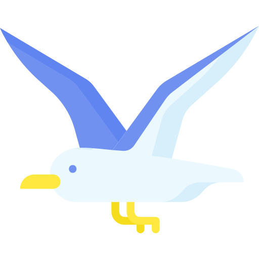
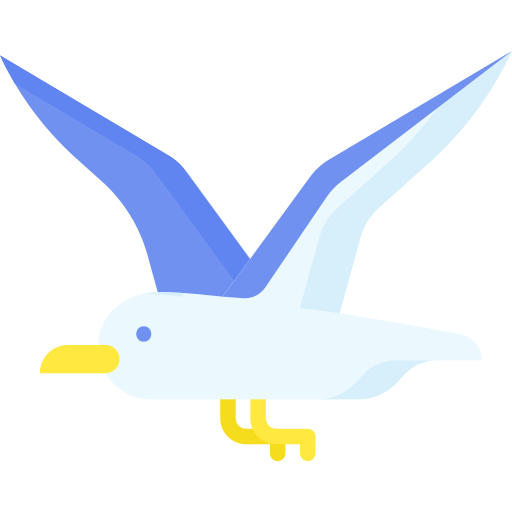
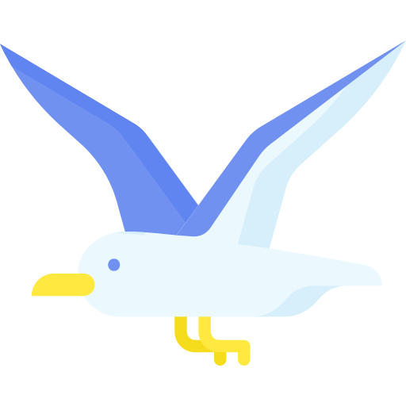

Je m’appelle Bryan Authiat, j’ai commencé l’informatique il y a bientôt
10 ans en assemblant des
machines, puis arrivé au lycée j’ai voulu faire de l’informatique mon domaine professionnel j’ai
donc effectué un Bac Sti2D option SIN pour ensuite me spécialiser dans le réseau en faisant un
BTS SIO option SISR dans lequel je me trouve depuis bientôt 2 ans.
Après mon BTS je compte quitter le cursus scolaire classique pour faire une formation en
alternance dans le domaine du SysAdmin et DevOps pendant deux ans.
Réseaux
Au fil de mes expériences et cours j'ai acquis plusieurs compétences en réseau tel que la
configuration de switch (TCP/IP) ou de router avec certains protocoles comme OSPF ou RIP, la
configuration de port et la maintenance d'un serveur font aussi partie des choses que je
sais
faire.
Administration
J'ai aussi été ammené à faire de l'administration système que ce soit de gérer des
infrastructures d'entreprises avec des serveurs Windows 2019 ou des serveurs de logs et de
fichier Linux, la supervision est aussi un domaine que je maitrise avec GLPI ou Centreon par
exemple.
Developpement
Même si le développement n'est pas ma spécialité j'ai pas mal de connaissance dans le domaine
notamment en intégration web (HTML/CSS/JS) mais aussi en backend avec le Php et les bases de
données ou en programmation plus basique avec le C#. Ce site est d'ailleurs fait par mes
soins
entièrement à la main.
Softskills
Pour ma compétence plus concrètes je suis à l'aise avec le travail en équipe et en leading
d'équipe grâce à mes différents projets et stage, je suis aussi très autonome, j'apprends
vite
la nouvelle technologie et je m'imprègne rapidement dans les différentes situations que je
rencontre.
Windows Server
Serveur de logs

Xefi situé à Bourgoin-Jallieu une SARL unipersonnelle créée en 2014, est une
société spécialisée dans l’informatique de proximité pour les professionnelles elle
maintient, installe et conseille les entreprises souhaitant léguer la gestion de leur SI (Serveur,
Poste, Fibre, VOIP, Impression, etc).
J’ai effectué 7 semaines de stage au sein de l’entreprise du 2 Novembre
au 18 décembre et j’ai eu l’occasion d’expérimenter et de découvrir le
monde de l’entreprise pour la première fois.
Support utilisateur
Xefi étant un prestataire de services pro, les clients faisaient souvent des
requêtes auprès des commerciaux qui ensuite créaient des tickets sur une CRM
propriétaire que les techniciens scrutent en permanence pour appeler les clients et
les aiders à distance avec des outils adéquats.
Maintenance d'infrastructure
Le plus gros de mon stage, je solutionnais les incidents sur des machines
clients ou alors je préparais les commandes de client comme par exemple
l'installation d'un nouveau system d'exploitation ou l'ajout de disque dur et de RAM en suivant
un devis que l'on m'a confié
Deploiment d'infrastructure
L'une de mes missions a été de déployer tous une infrastructure avec mon équipe
il y avait un nouveau serveur à créer entièrement ainsi que 6 postes fixes et 1 laptop à
préparer et un NAS. Une fois le serveur fini il a fallu créer les utilisateurs et ajouter les
machines au domaine.
C’est moi qui ai configuré le NAS avec le service RAID
adéquat, c’est
lui qui va stocker les sauvegardes du nouveau serveur.
Ensuite nous sommes aller dans l'entreprise pour tout installer
Configuration de server
L'une de mes dernières missions a été, avec l'aide d'un apprenti de configurer
entièrement un serveur Windows 2019 sous les directives de notre responsable nous
avons installé tous les services tels que AD, Hyper-V, Active directory, etc...
Bilan
Grâce à ce stage j'ai pu découvrir le mode de l'entreprise ainsi que plusieurs technologies
comme le service Hyper-V, les VPN et le deploiment de suite logicielle.
J'effectue de la veille technologique depuis mes 11 ans en commencant par du hardware pour ensuite me diversifier en passant par le developpement et le réseau, c'est qui m'a motiver à faire un BTS SIO.
La chaine youtube Tech-Sama est une chaine de high-tech informatique généraliste dirigé par aurelien sama, les sujet sont diverse et vont du simple fait divers populaire au coté assez technique sur des serveur ou des nouvelles technologies complexes.
La chaine de Yanis-Astuce-Pc est une chaine plus technique coté hardware et réseau ou il va faire un peu de vulgarisation et de tutoriel (Windows, linux, routage, ect) .
Je fais de la veille quotidiennement en regardant des vidéos principalement qui passe dans mon file de recommandation youtube où twitter. Ces vidéos proviennent de chaine auquel je suis abonné qui traite de sujet divers et varié allant simplement de l'informatique de bureautique aux aspects les plus précis.


 
